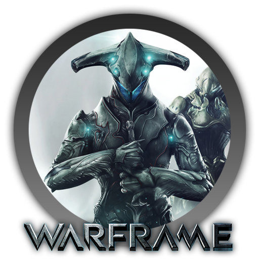

Warframe é um jogo de tiro em terceira pessoa com elementos de jogos de RPG. Os jogadores assumem o papel de Tenno, guerreiros cibernéticos equipados com armaduras avançadas, conhecidas como Warframes. Os Tenno lutam contra facções inimigas em um sistema solar em constante expansão, realizando missões e explorando o universo do jogo.
Os amigos se reuniram para jogar Warframe juntos, formando um esquadrão de Tenno poderosos e enfrentando desafios emocionantes no vasto universo do jogo.